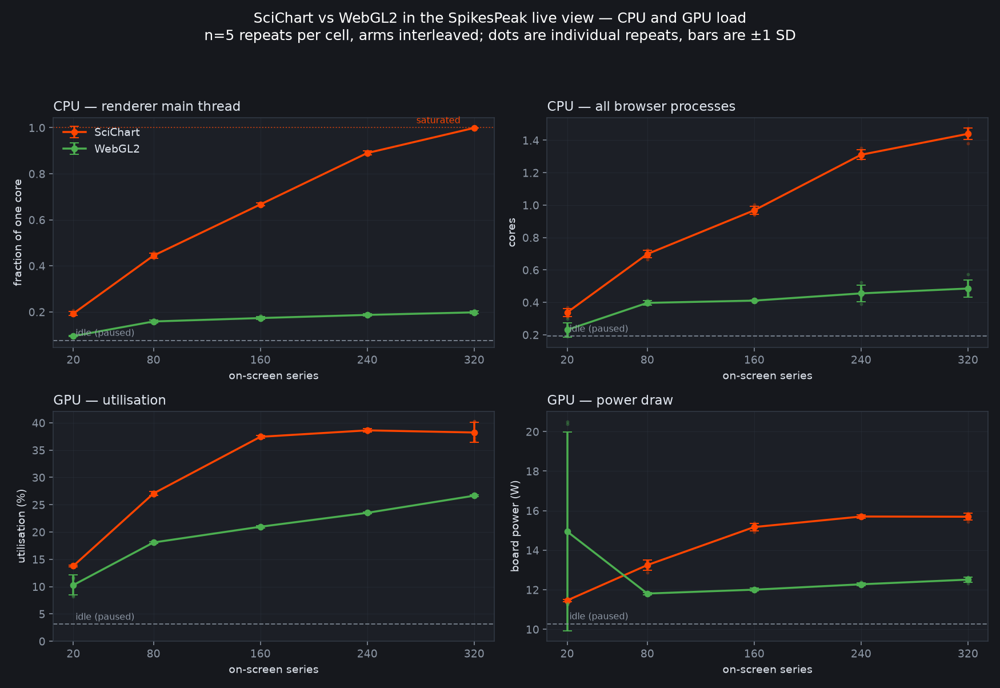
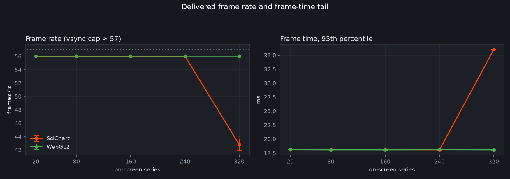
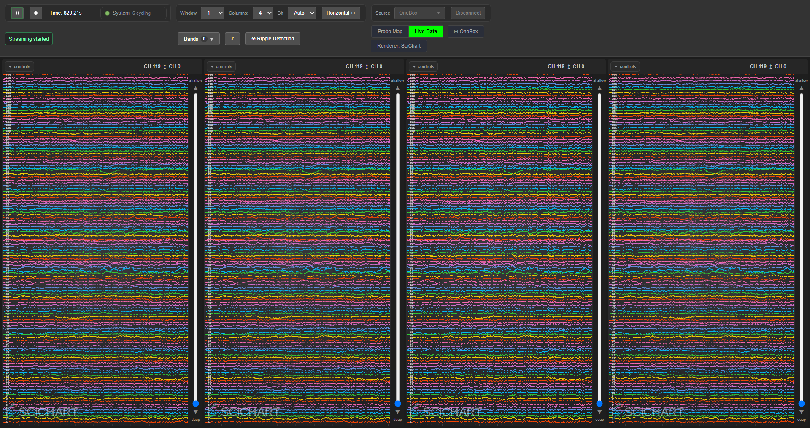
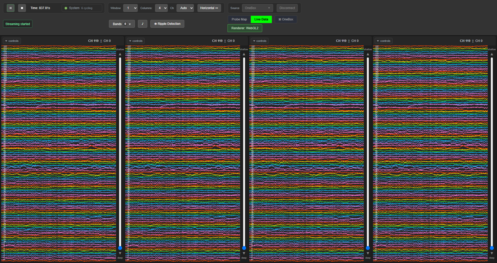
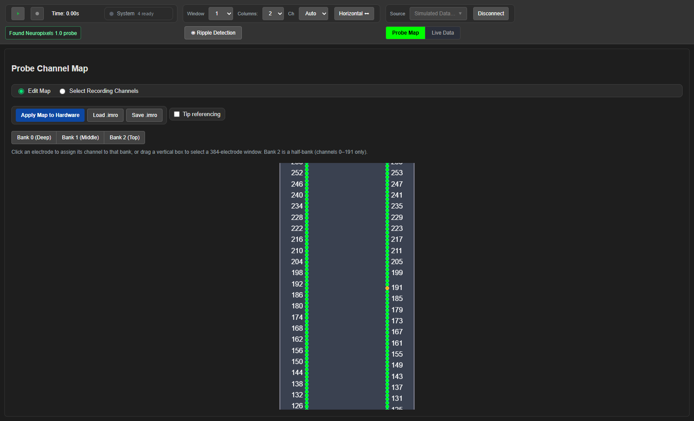
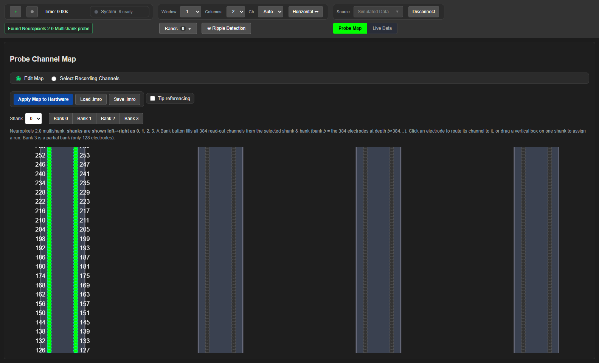

Replacing SciChart in the live view — the measured comparison#
A hand-written WebGL2 renderer (webinterface/GlRenderer.js) against SciChart, measured on the rig.
This is the full experimental record: method, data, result, mechanism and limits. The narrative of
how the bottleneck was located first is in RenderingPerformance.md; the
interface any replacement must satisfy is RendererContract.md.
Status: SciChart was removed from the repo on 2026-08-27. §1–§8 are the record of the comparison that decided it, measured while both renderers were present and left in the tense they were written in — they describe a two-renderer world that no longer exists, so read them as history, not as instructions. What was deleted, what replaced it, and the part this experiment never covered (the probe map, which was the larger half of the removal) are in §9.
Headline. The win is CPU, decisively; GPU, marginally. On the real rig at 480 on-screen traces the WebGL2 renderer uses 4.28× less renderer main-thread CPU and 2.45× less total browser CPU, and holds 60 fps where SciChart falls to 42 ± 5. GPU utilization differs by only 1.06× and board power by 1.01× — so the CPU saving is not displaced onto the GPU, but neither is there a large GPU saving to claim. §3 is the simulated sweep, §3a the hardware validation.
1. Why this was tested#
The live view collapsed at 320 traces: 43 fps, renderer main thread saturated. The standing
explanation was that SciChart is single-threaded and cannot use the GPU properly, so the fix was to
move drawing to a worker via OffscreenCanvas.
That explanation was wrong on the part that mattered. SciChart is a WebGL library and was
already using the GPU. An isolated harness (benchmarks/renderer_lab.html) showed that putting the
same 768 000 vertices on the GPU costs ~0.08 ms inside a 17.4 ms frame — four tenths of one
percent. Neither the drawing nor the vertex count was the wall.
The wall was per-frame CPU work that scales with series count. Measured directly: a vertex costs 9.1× more when it arrives as a new series than as a new point. That is the fingerprint of a fixed per-series cost, and it predicted that a renderer without per-series objects would not pay it. This experiment tests whether that prediction survives integration.
2. Method#
| Design | 2 renderers × 5 densities (20, 80, 160, 240, 320 on-screen series) × 5 repeats = 50 cells, plus 1 control |
| Interleaving | the renderer order flips every repeat (A/B, B/A, …) so monotonic drift — GPU warming, heap fragmentation, another process waking — lands on both arms equally |
| Blocking | one backend and one browser for the whole run; the renderer is switched live in-page, so nothing else differs between arms |
| Control | an idle cell with the view up and acquisition paused — without it the GPU figures include the desktop compositor and mean little |
| Dwell | 3 s settle, 8 s measurement; GPU polled every 0.4 s, so each cell yields ~19 samples rather than one reading |
| Source | SimNpx2 — one 384-channel raw band at 30 kHz, 1 s window, horizontal layout, ripple dock closed, exactly one WebSocket client |
| Hardware | RTX 3060 Ti, 1920×1080 at 60 Hz |
Instrumentation, with no new dependencies#
main_thread_busy— renderer main thread, from Chrome's own task accounting (Performance.getMetricsTaskDuration÷ wall). A single-core fraction, not a share of 16 cores; 1.000 means saturated.browser_cpu_cores— every browser process, from the Windows process CPU counters. Included deliberately: work moved to the GPU process rather than removed would look free in the metric above.gpu_util_mean,gpu_power_w—nvidia-smi, which ships with the driver. Utilization is coarse and saturates, so power is reported beside it. On the real rig power settled the GPU question in the negative: 19.8 W (SciChart) vs 19.6 W (WebGL2). The two renderers cost the GPU the same energy, which is the strongest single piece of evidence against claiming a GPU saving.fps,frame_p95_ms— the page's own frame counter.
psutil would have been the obvious way to get process CPU and was not installed: no new
dependencies. PowerShell's process counters answer the same question.
How the data was produced:
python benchmarks/renderer_experiment.py 5
python benchmarks/renderer_analysis.py
The first of those no longer runs against the shipped tree: it switches arms by calling
window.__setGl, which was removed with SciChart on 2026-08-27 (§9). There is one renderer now, so
there is no A/B left to drive. renderer_analysis.py still redraws the figures from the recorded
CSVs, which are unaffected.
3. Data#
Mean ± SD over n = 5. Main-thread busy and browser CPU are fractions of a core.
| series | main-thread busy | browser CPU (cores) | GPU util (%) | fps | ||||
|---|---|---|---|---|---|---|---|---|
| SciChart | WebGL2 | SciChart | WebGL2 | SciChart | WebGL2 | SciChart | WebGL2 | |
| 20 | 0.193 ± .009 | 0.095 ± .003 | 0.338 ± .025 | 0.230 ± .044 | 13.8 | 10.3 | 56 | 56 |
| 80 | 0.444 ± .011 | 0.159 ± .006 | 0.698 ± .022 | 0.397 ± .013 | 27.1 | 18.1 | 56 | 56 |
| 160 | 0.667 ± .006 | 0.173 ± .007 | 0.968 ± .026 | 0.411 ± .003 | 37.4 | 21.0 | 56 | 56 |
| 240 | 0.890 ± .008 | 0.187 ± .005 | 1.311 ± .030 | 0.455 ± .051 | 38.6 | 23.5 | 56 | 56 |
| 320 | 0.999 ± .000 | 0.198 ± .006 | 1.440 ± .036 | 0.485 ± .054 | 38.2 | 26.7 | 43 | 56 |
Idle control (view up, paused): 0.077 busy · 0.191 cores · 3.1 % GPU · 10.3 W. Subtracting it, the CPU gap at 320 series is ~7.6× on the main thread and ~4.2× across the browser.
Paired per-repeat ratios (SciChart ÷ WebGL2)#
Paired because both arms are measured in the same session within the same repeat, so between-repeat drift cancels.
| series | main-thread CPU | browser CPU | GPU util |
|---|---|---|---|
| 20 | 2.03 ± 0.07× | 1.50 ± 0.26× | 1.38 ± 0.27× |
| 80 | 2.81 ± 0.09× | 1.76 ± 0.09× | 1.50 ± 0.03× |
| 160 | 3.85 ± 0.12× | 2.36 ± 0.07× | 1.79 ± 0.03× |
| 240 | 4.76 ± 0.12× | 2.91 ± 0.32× | 1.64 ± 0.02× |
| 320 | 5.05 ± 0.15× | 2.99 ± 0.28× | 1.43 ± 0.06× |
| 480 (real rig) | 4.28× | 2.45× | 1.06× |
The CPU gain grows monotonically with density, which is the signature of per-series overhead being what was removed. The GPU column does not reproduce on hardware — treat the sim's 1.43× as a simulated-source artifact and the rig's 1.06× as the real answer.
Figures#

Points are means over five repeats, bars ±1 SD, faint dots the individual repeats. Dashed line is the paused control; dotted line at 1.0 is main-thread saturation. Both GPU panels also favor WebGL2 in the sim only — on the real rig at 480 traces the two are at parity (38.0 vs 35.9 %, 19.8 vs 19.6 W), so read the GPU panels as "no penalty", not as a saving. The one wide error bar — WebGL2 power at 20 series — is a single outlying repeat (~20 W against ~11.5 W elsewhere), left in rather than trimmed.

Both hold ~57 fps to 240 series. At 320 SciChart drops to 43 fps and its frame-time tail doubles to 36 ms; WebGL2 stays at 56 fps and 18 ms. This understates the hardware result, where WebGL2 held a true 60 ± 0 fps against SciChart's 42 ± 5 at 480 traces (§3a) — the ~57 ceiling here is a benchmark-window compositing artifact, not a limit of either renderer.
Raw data: benchmarks/experiment_raw.csv (51 cells) and experiment_summary.csv.
The figures are regenerated into benchmarks/plots/ by renderer_analysis.py; the
copies here are what the docs book renders.
3a. Validated on real hardware — OneBox + NP2.0, 480 traces#
The sweep in §3 uses a simulated source. This is the same comparison on the rig: a real OneBox with a real Neuropixels 2.0 probe, four columns of 120 traces each, every cell verified at exactly 480 on-screen traces before its numbers were recorded.
| metric | SciChart | WebGL2 | ratio |
|---|---|---|---|
| main-thread busy | 0.964 ± 0.004 | 0.225 ± 0.006 | 4.28× |
| browser CPU (cores) | 1.327 ± 0.030 | 0.541 ± 0.052 | 2.45× |
| GPU utilization (%) | 38.0 ± 0.4 | 35.9 ± 0.2 | 1.06× |
| GPU power (W) | 19.8 ± 0.1 | 19.6 ± 0.1 | 1.01× |
| frame rate | 42 ± 5 fps | 60 ± 0 fps | — |
n = 4 interleaved repeats, one browser session, real neural data on the raw band.
The GPU claim from the simulated sweep does not survive here, and the CPU claim gets stronger. In sim the GPU ratio was 1.43×; on hardware it is 1.06× and power is within 1 % — the two renderers do comparable GPU work. The honest statement is "the GPU does much the same; the CPU does about four times less." The frame-rate difference is larger than sim suggested (42 → 60 fps) because a real 480-trace layout is heavier than the sim's 320.
The verification that made this trustworthy, after it caught a wrong result. An earlier run of this comparison reported ~156 traces as though it were 480:
ChartColumn.setStream()does not setuserPickedStream, so a laterupdateStreamSelectors()silently reverted three of the four columns to the 12-channel OneBox ADC. The probe said "480" because it was counting allocated series rather than what was on screen; the operator noticed from the screen that only one column carried the raw band. The measurement now re-applies the stream selection after every renderer switch (which rebuilds the columns) and aborts unless the count is exactly 480.A second trap in the same area: counting
series.isVisiblereported 0 under WebGL, because the SciChart series were deliberately hidden there — so a probe that asked the wrong renderer called a full screen empty. Since §9 there is only one renderer left to ask, and the probe iswindow.__benchPointCount(colIndex), which answers from the GL renderer and returns −1 for no such column or a lost context. The rule outlives the particular trap: an "is anything drawn?" probe must ask the thing that is actually drawing.

SciChart — four columns of 120 NP2.0 channels, 42 ± 5 fps, renderer main thread at 96 %.

The WebGL2 renderer — the same 480 traces from the same probe, 60 fps, 22 % of one core. The aesthetic is deliberately unchanged: same palette, same per-column bands, same axes.
4. Why it is faster — the mechanism#
Not because the WebGL is cleverer. Because the live view needs almost none of what a charting library does, and SciChart re-establishes all of it, per series, every frame.
SciChart is general purpose: zoom, pan, tooltips, annotations, several axis types, resampling
strategies, arbitrary series types, hit-testing. The live view uses none of that on the traces — the
axes are fixed and label-less, nothing is interactive, there is one series type, and the data
arrives already in absolute plot coordinates because NetworkClient bakes the vertical offset and
scale into Y at append time. So the generality is paid for and thrown away, 320 times a frame.
Concretely, four differences, in rough order of how much they matter:
1. Where the data→pixel transform happens. SciChart manages a coordinate calculator per series
and turns values into pixels on the CPU. This renderer uploads raw values and does the transform in
the vertex shader from four uniforms (xMin, xMax, yMin, yMax). 768 000 transforms per frame move
from the CPU to GPU lanes that were idle — and the CPU does zero of them.
2. No per-series objects. SciChart has a renderable series, a data series, a stroke, a visibility
flag and a calculator per channel, and walks that scene graph every frame. This renderer has one
vertex buffer, one color buffer and one VAO per column; a "series" is an offset and a length in a
drawArrays call. There is nothing to traverse, validate or invalidate.
3. No JS↔WASM boundary on the data path. SciChart's samples live in the WASM heap, so every
appendRange crosses the boundary — 320 crossings per frame, 50 times a second. This renderer's
staging buffer is a plain Float32Array; an append is a typed-array write.
4. Fewer draw calls and state changes. One drawArrays per row against a static VAO, with no
per-series state transitions in between. That saving lands on the CPU — the cost of issuing and
validating the calls — not on the GPU. On the real rig GPU utilization and power are essentially
unchanged between the two renderers (38.0 vs 35.9 %, 19.8 vs 19.6 W). Both put the same vertices on
the same silicon; only one of them makes the CPU work hard to get them there.
The isolated harness bounds the whole thing: issuing every draw call for 768 000 vertices costs 0.076 ms, against the 17.4 ms SciChart needs at that density. Roughly 17.3 ms of that frame was never drawing at all.
5. Architecture as built#
Series-major, double-length, compacted.
Each row owns a contiguous span of 2 × capacity points and is written sequentially, so the visible
window is one contiguous drawArrays span — there is no ring-wrap segment stitching the newest
sample to the oldest across the screen. When a row's head reaches the end, the last capacity points
are copied to the front and the head resets: one larger upload roughly once per second, nothing per
frame.
The layout fork, quantified#
The buffer layout decides what a frame costs to upload, and there are exactly two candidates.
- Series-major —
[s0 p0..pN][s1 p0..pN]…. Each channel owns a contiguous span, so a frame's new samples land at N different offsets: NbufferSubDatacalls. Memory order is already strip order, so it draws as a plainLINE_STRIPwith no index buffer. - Time-major —
[t0 s0..sN][t1 s0..sN]…. One frame's samples are contiguous, so the whole frame is onebufferSubData. But consecutive memory is now different channels, so the strip has to be gathered through a strided index buffer — built once, never re-uploaded. It trades upload cost for vertex-fetch locality, which is why draw is measured in both arms.
| series | series-major upload (N calls) | time-major upload (1 call) | upload ratio | draw delta |
|---|---|---|---|---|
| 80 | 0.168 ms | 0.048 ms | 6.3× | +0.003 ms |
| 160 | 0.232 ms | 0.049 ms | 8.6× | +0.006 ms |
| 320 | 0.411 ms | 0.050 ms | 11.8× | −0.003 ms |
| 640 | 0.477 ms | 0.053 ms | 12.2× | ±0.000 ms |
| 1280 | 0.516 ms | 0.048 ms | 12.3× | −0.004 ms |
Time-major wins the measurement outright. The strided index buffer is free — draw deltas are within ±0.008 ms, which is noise, and at the highest densities time-major is marginally faster. Upload is up to 12× cheaper and, unlike series-major, flat in series count: it costs the same 0.05 ms at 1280 series as at 80, because it is one call either way.
And series-major is what shipped. The reason is correctness, not performance. A time-major ring cannot express "draw the last window as one strip" through a static index buffer: once the write head wraps, the newest sample and the oldest sample are adjacent in index order, so a static buffer draws a horizontal slash across every trace at the wrap point. Fixing it means rebuilding or re-uploading the index buffer whenever the head moves — which is precisely the per-frame upload the layout existed to avoid — or splitting into two draws and giving part of the win back.
Series-major sidesteps the wrap entirely: each row owns 2 × capacity and is written sequentially,
so the visible window is always one contiguous range, and the compaction happens once a second rather
than once a frame.
The price is 0.36 ms/frame at 320 series — about 2 % of a 17.4 ms budget — paid to keep the traces free of a rendering artifact, at a density where the whole renderer is already 30× under budget. That is the right trade today. Revisit it when 0.4 ms is the thing in the way, and expect a wrap-aware time-major path to recover somewhat less than the table promises.
Painting is scheduled two ways on purpose — requestAnimationFrame plus a 24 ms timer, whichever
fires first. See §6.
6. Two mistakes that each produced confident wrong numbers#
The first A/B showed no gain at all — 41 fps against 44, both saturated. The GL canvas was
layered over the SciChart surface, so it looked like a swap while SciChart stayed bound, kept being
fed by appendRange, and kept drawing. The app was paying for both renderers. A comparison that
leaves the incumbent running is not a comparison. The fix at the time was to skip the SciChart
appends and hide its series whenever window.__useGl was set; since §9 there is no incumbent left to
leave running.
The renderer appeared to paint 1.0 frames/s with every buffer full and correct.
requestAnimationFrame does not fire in a window Chrome believes is occluded
(AgentTraps.md §5f) — and setTimeout, the obvious fallback, is clamped to ~1 Hz
in the same state. The GUI harness passed no anti-throttling flags, which means every GUI test
had been running against a page throttled to 1 Hz. Fixed in tests/gui/_harness.py
(--disable-features=CalculateNativeWinOcclusion, --disable-backgrounding-occluded-windows,
--disable-renderer-backgrounding); the renderer also schedules a timer alongside rAF so neither can
hold it hostage.
7. Limits#
- The CPU figures travel; the GPU figure did not. Sim gave 5.05×/2.99× at 320 series; the rig gives 4.28×/2.45× at 480 — consistent. But the sim's 1.43× GPU ratio is a simulated-source artifact: on hardware it is 1.06× utilization at 1.01× power, i.e. parity. Tellingly, SciChart's GPU utilization reproduced almost exactly (38.2 → 38.0) while WebGL2's did not (26.7 → 35.9) — so the gap closed from the WebGL2 side. Do not quote a GPU saving. The sim's ~57 fps ceiling was also a benchmark-window artifact, not a hard vsync limit: on the rig WebGL2 held a true 60 ± 0 fps against SciChart's 42 ± 5.
- Simulated single-band source. A real multi-band load (NP1
ap+lfp+ NI-DAQ + ripple detection + recording) adds main-thread work to both arms. - GPU utilization is coarse — a percentage sampled at 2.5 Hz. Power is reported beside it for that reason.
- Not everything that is not traces. Per-channel DOM labels, the depth readout, the strip controls and the resize path are the live view's other main-thread work and are unchanged by this.
- This was written while SciChart was still the default, with the GUI suite gating on it and
window.__setGl(true)switching every column live. That limit expired: SciChart was removed on 2026-08-27 and the WebGL2 renderer is the only one (§9).
8. How the switch worked, while there was one#
All of this was removed on 2026-08-27 (§9) and none of it exists in the tree today. It is kept because the shape of it is the lesson, not the flag names.
window.__setGl(true) // every column -> WebGL2, live
window.__setGl(false) // back to SciChart
The flag was read when a column was constructed, so __setGl rebuilt the columns; it returned a
promise, and awaiting it is what made a benchmark measure the renderer it had asked for rather
than the previous one. A switch that rebuilds the thing it switches is asynchronous whether or not
its caller admits it. BENCH_GL=1 python benchmarks/cdp_bench.py <label> chose the arm from the
benchmark side and SPIKESPEAK_GUI_RENDERER chose it for the GUI suite; all three selectors are
gone, because there is nothing left to select between.
9. The removal, 2026-08-27#
The experiment above settles the live view. The bundle also drew the probe map, which nothing
above measures and which was the larger half of the work: the roughly 700 lines of electrode, bank
and shank logic in ImroManager.js sat on top of a SciChart scatter series. Both are hand-written
now, and webinterface/lib/ contains nothing but qwebchannel.js.
Deleted: webinterface/lib/index.min.js, webinterface/lib/scichart2d.js and
webinterface/lib/scichart2d.wasm — 3.5 MB of vendored bundle.
What draws now:
| What | File | How |
|---|---|---|
| live-view traces | webinterface/GlRenderer.js — GlColumnRenderer |
WebGL2. One vertex buffer and one VAO per column, series-major double-length layout (§5), one drawArrays(LINE_STRIP, …) per trace over a contiguous span. It is now the only renderer. |
| probe / electrode map | webinterface/ProbeMap.js — ProbeMap |
Plain canvas 2D. It keeps the clear() / appendRange(xs, ys, metas) series API the old scatter had, which is why the electrode/bank/shank logic in ImroManager.js did not have to change at all. It culls to the visible y range, and redraws are reactive: writing isHidden, x1 or y2 schedules one rAF. |
ImroManager.js's init function is initProbeMap(); it was initImroSciChart().
Renamed in the DOM and CSS, because the library's name was baked into ids a reader would otherwise search for and not find:
#scichart-imro-root→#probe-map-root#scichart-container-N→#chart-container-N.scichart-container-wrapper→.chart-container-wrapper
There is now exactly one copy of the samples. DataStore.js holds no per-channel sample buffer
at all. There used to be two chart-library FIFOs per channel which the renderer then read back out;
NetworkClient now hands each decoded batch straight to GlColumnRenderer.appendRow(), and that
buffer is the only copy.
Globals removed: window.__setGl, window.__useGl, and the environment variable
SPIKESPEAK_GUI_RENDERER. All three existed to choose between renderers.
window.__benchPointCount(colIndex) remains and now answers only from the GL renderer, returning
−1 for no such column or for a lost context.
The plot background was in no stylesheet. The radial gradient behind the traces came from the
bundle's own default dark theme, so deleting the bundle took the background with it and there was no
CSS rule to go and look at. It is explicit now, in webinterface/style.css on
.chart-container-wrapper: radial-gradient(circle, #3C3C3F 0%, #1C1C1E 100%). The GL canvas clears
to transparent so that gradient shows through.
The GUI harness asserts instead of selecting. tests/gui/_harness.py no longer picks a renderer;
it checks that a column has a live GL renderer and refuses to run if not. A blank canvas is not a
failing test — every layout assertion would sail straight over it — so the suite has to establish
that something is drawing before any of its measurements mean anything.

NP1.0 in canvas 2D: one shank shaft, the two electrode columns routed to read-out channels in green, electrode numbers thinned to whatever fits, and the amber internal-reference site at electrode 191.

NP2.0, four shanks. The read-out channels are all on shank 0 here; the other three shanks draw their electrodes in gray with no labels, which is what keeps 5120 sites legible.
How the probe map is drawn now#
ProbeMap is about 380 lines and has no per-point objects. Three details are worth knowing because
they are the ones a future change is most likely to undo:
- Redraws are reactive, with an equality guard. Writing
isHidden,x1ory2on a shaft, tip or the selection box schedules exactly onerequestAnimationFrame.ImroManagermutates these in fifteen places, and requiring a manual redraw call at each one means the first site anybody forgets leaves the operator looking at a stale probe map — which is indistinguishable from a working one. The equality guard matters as much as the reactivity: writing the same value must not schedule a frame, or the write feeds itself a redraw every frame. - Labels drop when they would collide. At the default zoom the view spans about 67 electrode rows over ~560 px — roughly 8 px per row, for 16 px type. The old chart library's data-label engine hid colliding labels automatically; drawing all of them turns the column into an unreadable smear. Collision is resolved per SIDE across every series, not per series, so the amber internal-reference label and its neighboring routed electrode compete for the same column of text — and the reference wins, because it is the one label naming something the operator cannot infer from the pattern.
- Dot radius is clamped to the on-screen row pitch. Each series carries a design radius, but a dot drawn at full size is wider than the row spacing, so adjacent electrodes merge into a solid bar and stop reading as separate sites. Sizing to the pitch keeps them distinct at every zoom rather than at the one that happened to be tuned.
Everything else is culling: only electrodes inside the visible y range are considered, so a redraw touches on the order of a hundred points out of NP2.0's 5120.
9a. Six defects the removal exposed#
Removing a dependency is a good way to find out what was quietly leaning on it. Each of these was either live before the removal or would have shipped with it.
1. The channel labels were pinned to the wrong box. Described below — the largest visible one.
2. A deliberate teardown reported itself as a fault. GlColumnRenderer.destroy() calls
loseContext(), and that fires webglcontextlost synchronously. The new "context lost" handler
therefore fired on every column rebuild — orientation flip, column count, density change — and told
the operator the live view had broken. The listener now ignores a loss it caused itself.
3. Two guards became permanently false, in silence. handleNewStream() and
handleWindowResize() both tested columns[0].wasmContext — the chart library's handle, used as a
proxy for "the live view is ready". Deleting the library made both tests always-false with no error
anywhere: no stream was ever registered and the view sat on "Waiting for data..." forever. This is a
failure mode this codebase keeps meeting — a proxy standing in for a condition — and it is invisible
precisely because nothing throws. Both now test what they mean.
4. The plot background lived only inside the bundle. Covered in section 9; the reason it was
recoverable at all is that RendererContract.md had recorded the exact
gradient values before the deletion.
5. Trace color was keyed to the display row, not the channel. setLayout() uploaded
PALETTE[row % 7], so a trace changed color whenever it moved rows — paging the slider repainted the
whole column — and the on-screen sequence became a clean repeating 7-cycle. It is deliberately not
a clean cycle: color is keyed to the read-out channel and depth ordering permutes channels into rows,
which is what lets an operator follow one channel while scrolling. draw() now pushes each row's
color as it binds the row. A tidy repeating cycle down a column is the signature of this regressing.
6. Nothing cleared buffered samples on a relayout. The y offset and the packed/interleaved ordering are baked into each sample at append time, so a depth relayout or an ordering switch makes everything already buffered wrong — it keeps drawing at its old height under a label that now says something else. The old code cleared the library's per-channel buffers for exactly this reason; when those buffers went away the calls became guarded no-ops on a field that no longer existed. They still ran. They just did nothing. Three call sites now clear the renderer instead: a row rebound to a different channel, a depth relayout, and a packed/interleaved switch.
A seventh, caught in review before it shipped: the chart div was a containing block only because the
library set position: relative on it inline. The absolutely-positioned trace canvas then
resolved against the wrapper instead — the same box today, by coincidence of the current layout.
It is stated in CSS now.
The latent bug the removal fixed#
The per-channel label overlay was pinned to the chart library's inset plot rect, while the GL canvas drew into the full div. Under WebGL the labels therefore sat slightly high of the traces they name — off by the library's own plot margin, which reads like a CSS rounding error rather than two renderers disagreeing about where the plot area is.
The inset was measured at exactly 5 px at the bottom, contributed by the (invisible, label-less)
x-axis: a surface with no x-axis reports the full host height, one with an isVisible: false axis
also reports the full height, and one with the shipping label-less axis reports hostH - 5. Five
pixels is 13 % of a row at 20 rows and about 80 % of a row at 120 — which is why the error looked
like nothing at low density and like a genuine off-by-one at high density.
With the library gone the plot area is the div, there is only one coordinate system left, and the labels align by construction rather than by agreement.